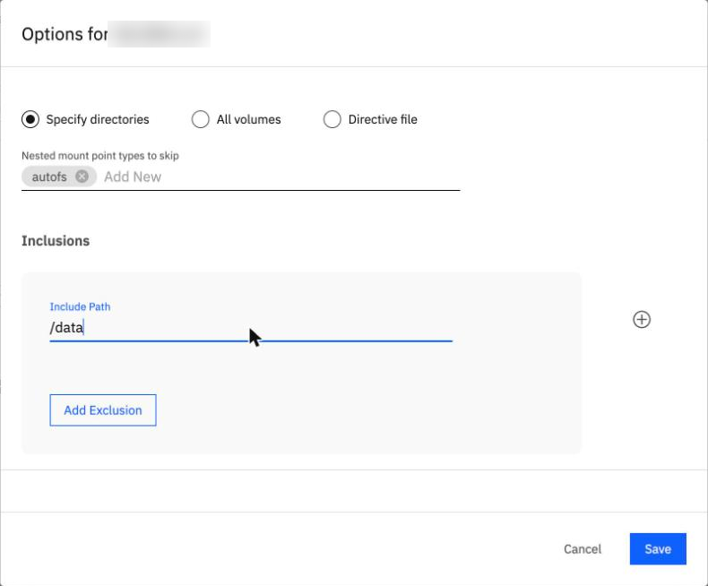
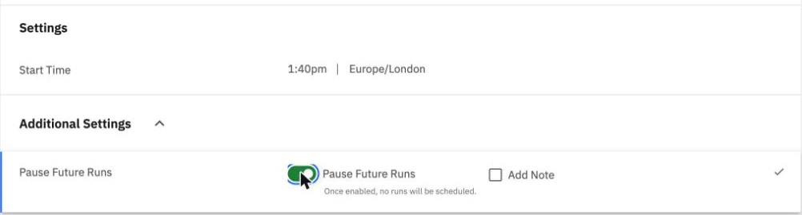

Policies and protection groups
By the end you can say which built-in policies lock their backups, find the lock in the Create Policy dialog, and make a file-based protection group that waits until you run it.
Northgate Freight is a made-up company. It has just ordered a BRS instance and wants to protect the folder /data on a Linux server. Before the first backup it must choose a policy and make a group.
Every number and screen in this unit comes from real runs in our lab on 8 November 2026, recorded in tutorials B1 and B3a. The server name is blurred in the screenshots; no address appears.
What does a new instance start with?
A policy says how often to back up and how long to keep each backup. A new instance comes with four, already made.
Policy Schedule Kept Basic daily 30 days Bronze daily 30 days Gold every 4 hours 1 week Silver every 12 hours 2 weeks
Which of the four carry a data lock?
Show the answer
Gold, Silver and Bronze carry a Compliance data lock equal to their retention. Basic has none.
Policy Data lock Gold 1 week Silver 2 weeks Bronze 30 days Basic none
Northgate wants to try a backup and delete it the next day. Which policy should it use?
Show the answer
A backup made with a locked policy cannot be deleted until the lock ends, not even by an administrator. The tutorial's advice for a test is to use Basic, or your own policy.
Find the lock
These screens come from the BRS console in our lab. Click where you would click. After two misses the right place is marked.

This is Data Protection > Policies. Where does the list say how long Gold's lock lasts?
Show where
Right. The line under the name reads Backup 4h, Retain 1w, DataLock 1w. A padlock beside the name marks the three locked policies; Basic has neither.

Northgate clicks Create Policy. The dialog opens like this. Which field would lock every backup the new policy makes?
Show where
Right. The dialog fills in a data lock of its own: Retain for 2 Weeks, Lock 2 Weeks. Leave it and backups cannot be deleted until the lock ends, not even by an administrator. To remove it, point at the Lock field and click the minus sign that appears.

Northgate removed the lock and set Retain for to 7 Days. What on screen shows the policy now has no lock?
Show where
Right. The Lock field has become + Add DataLock. In our lab the policy was saved as "Retain 1w" with no lock, and the list shows no lock symbol for it.
A file-based group
A protection group joins a source, the paths to protect and a policy. In the console, Protect > Physical Server offers File-based and no volume-based type.
Why file-based and not volume-based for a folder?
Show the answer
That is what tutorial B3a states. The console makes the choice for you: it offers no volume-based type.
In the group's options for the server, Include Path starts as /. What does that protect?
Show the answer
Specify directories is chosen and Include Path is /, the whole server. Northgate changes it to /data.

Northgate clicked the pencil on the server's row. Where does it limit the group to the folder?
Show where
Right. Type /data in Include Path, then click Save.
A group that starts by itself
Northgate wants to run its first backup by hand, when it is ready. It fills in the group form, picks the daily policy and clicks Protect. It does not open Additional Settings.
What does the group do next?
Show the answer
The start time is the moment you open the form, so without the pause the daily schedule runs from now.

Where does Northgate stop the schedule before it clicks Protect?
Show where
Right. Under Additional Settings, click the Pause Future Runs row, switch it on and click the tick. The note reads: once enabled, no runs will be scheduled.

Northgate clicked Protect. Where does the list show the group is paused?
Show where
Right. The Paused tag beside the group. In our lab the command line agreed: the group was paused, file-based, on /data.
Three questions
Which of the four built-in policies has no data lock?
Show the answer
Basic: daily, kept 30 days. Gold, Silver and Bronze each carry a lock equal to their retention.
You click Create Policy. What does the Lock field hold when the dialog opens?
Show the answer
The dialog fills in Retain for 2 Weeks and Lock 2 Weeks. A locked backup cannot be deleted until the lock ends.
You make a group and do not switch on Pause Future Runs. When does its daily schedule start?
Show the answer
The start time is the moment you open the form. Switch on Pause Future Runs to keep only manual runs.
You can choose a policy and make a group
A new instance has four policies; Gold, Silver and Bronze lock their backups and Basic does not. The Create Policy dialog adds a lock of its own: remove it for a test. A new group runs from the moment you open the form unless you pause it.
Tutorial B1 orders the instance and shows its four policies. Tutorial B3a registers the server, makes the policy and makes the paused group, from the console and the command line.